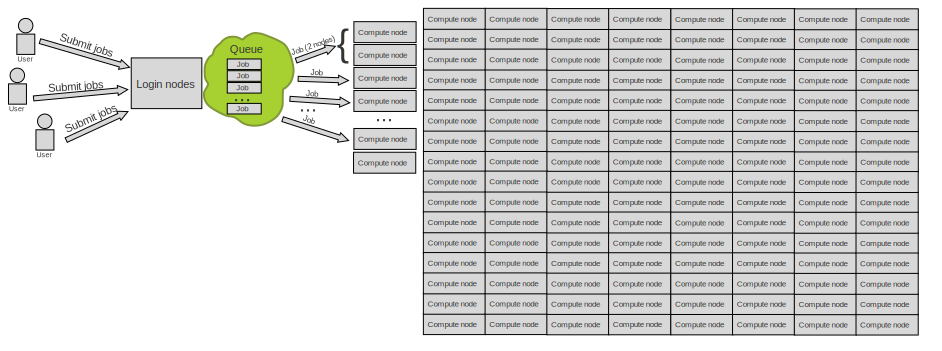
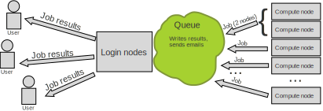
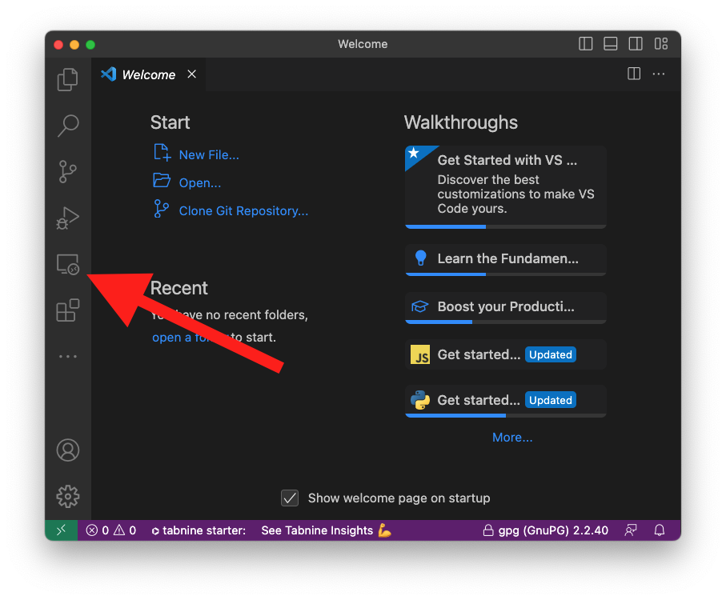
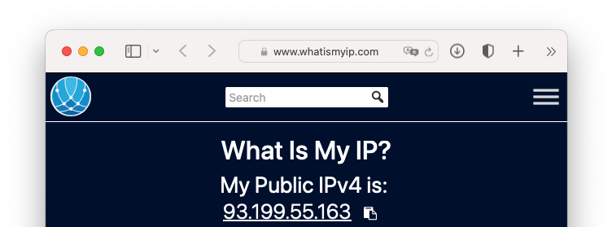
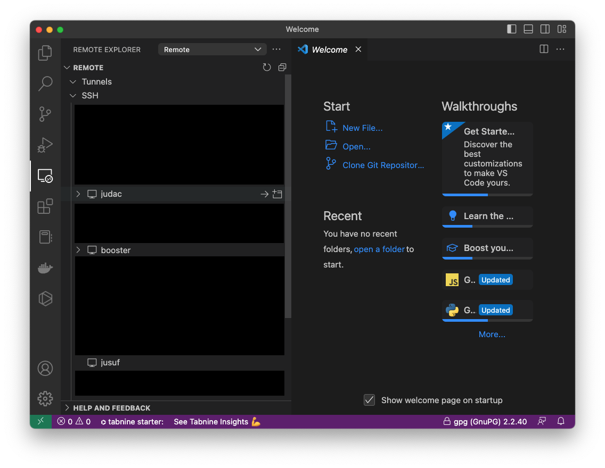
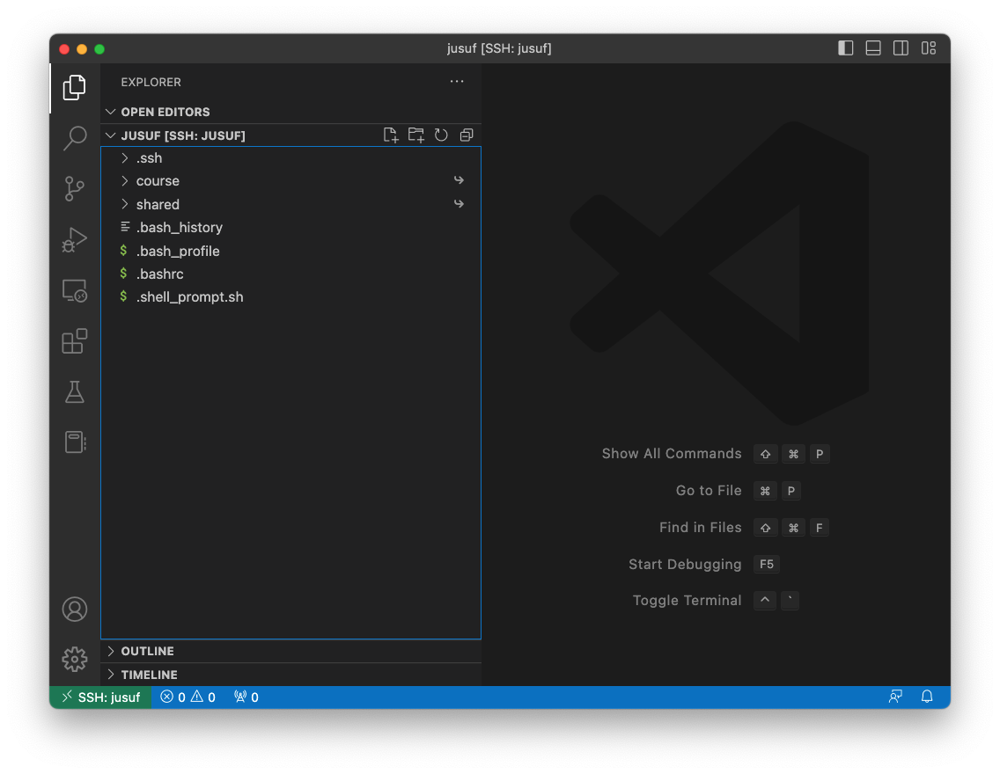

Getting Started with AI on Supercomputers
Alexandre Strube // Sabrina Benassou
February 29, 2023
Communication:
Goals for this course:
- Make sure you know how to access and use our machines
- Distribute your ML workload.
Team:

Schedule for day 1
| Time | Title |
|---|---|
| 09:00 - 09:15 | Welcome |
| 09:15 - 10:00 | Introduction |
| 10:00 - 11:00 | Judoor, Keys |
| 11:00 - 12:00 | SSH, Jupyter, VS Code |
| 12:00 - 13:00 | Sync (everyone should be at the same point) |
Jülich Supercomputers

What is a supercomputer?
- Compute cluster: Many computers bound together locally
- Supercomputer: A damn lot of computers bound together locally
Anatomy of a supercomputer
- Login Nodes: Normal machines, for compilation, data transfer, scripting, etc. No GPUs.
- Compute Nodes: Guess what :-)
- Network file system
- Scratch file system accessible from compute nodes
- Key stats:
- Number of Nodes
- CPUs, Number of Cores, Single-core Performance
- RAM
- Network: Bandwidth, Latency
- Accelerators (e.g. GPUs)
JUWELS Booster
- 936 Nodes
- AMD EPYC Rome 7402 CPU 2.7 GHz (2 × 24 cores x 2 SMT threads = 96 virtual cores/node)
- 512 GiB memory
- Network Mellanox HDR infiniband (FAST💨 and EXPENSIVE💸)
- 4x NVIDIA A100 with 40gb.
TL;DR: 89856 cores, 3744 GPUs, 468 TB RAM 💪
Way deeper technical info at Juwels Booster Overview
JUSUF
- 205 Nodes
- AMD EPYC Rome 7742 CPU 2.25 GHz (2 × 64 cores / node)
- 256 GiB memory
- 61 nodes with 4x NVIDIA V100 with 16gb.
TL;DR: Smaller than JUWELS Booster, but still packs a punch 🤜
Way deeper technical info at JUSUF Overview
How do I use a Supercomputer?
- Batch: For heavy compute, ML training
- Interactively: Jupyter
You don’t use the whole supercomputer
You submit jobs to a queue asking for resources

You don’t use the whole supercomputer
And get results back

You don’t use the whole supercomputer
You are just submitting jobs via the login node

You don’t use the whole supercomputer
You are just submitting jobs via the login node

You don’t use the whole supercomputer
You are just submitting jobs via the login node

You don’t use the whole supercomputer
- Your job(s) enter the queue, and wait for its turn
- When there are enough resources for that job, it runs

You don’t use the whole supercomputer
And get results back

Supercomputer Usage Model
- Using the the supercomputer means submitting a job to a batch system.
- No node-sharing. The smallest allocation for jobs is one compute node (4 GPUs).
- Maximum runtime of a job: 24h.
Recap:
- Login nodes are for submitting jobs, move files, compile, etc
- NOT FOR TRAINING NEURAL NETS
Recap:
- User submit jobs
- Job enters the queue
- When it can, it runs
- Sends results back to user
VSCode
- Download VScode: code.visualstudio.com
- Install it
- Install Remote Development Tools
- On the local terminal, type
code
VSCode
Now with the remote explorer tab

| ### Connecting to JUWELS BOOSTER |
#### Getting compute time - Go to https://judoor.fz-juelich.de/projects/join/training2303
- Join the course project training2303 - Compute time
allocation is based on compute projects. For every compute job, a
compute project pays. |
Connecting to JUWELS BOOSTER and JUSUF
SSH
- SSH is a secure shell (terminal) connection to another computer
- You connect from your computer to the LOGIN NODE
SSH
- Security is given by public/private keys
- You connect from your computer to the LOGIN NODE
SSH
Create key
$ ssh-keygen -a 100 -t ed25519 -f ~/.ssh/id_ed25519-JSC
Generating public/private ed25519 key pair.
Enter passphrase (empty for no passphrase):
Enter same passphrase again:
Your identification has been saved in /Users/strube1/.ssh/id_ed25519-JSC
Your public key has been saved in /Users/strube1/.ssh/id_ed25519-JSC.pub
The key fingerprint is:
SHA256:EGNNC1NTaN8fHwpfuZRPa50qXHmGcQjxp0JuU0ZA86U strube1@Strube-16
The keys randomart image is:
+--[ED25519 256]--+
| *++oo=o. . |
| . =+o .= o |
| .... o.E..o|
| . +.+o+B.|
| S =o.o+B|
| . o*.B+|
| . . = |
| o . |
| . |
+----[SHA256]-----+SSH
Configure SSH session
SSH
Configure SSH session
SSH
Jülich Supercomputing Centre restricts where you can login from
So we need to:
- Find our ip range
- Add the range and key to (Judoor)[http://judoor.fz-juelich.de]

SSH
Find your ip/name range
- Terminal:
curl ifconfig.me
(Ignore the % sign)
SSH
Find your ip/name range
- Browser: https://www.whatismyip.com
SSH
Find your ip/name range

SSH - Example:
93.199.55.160
- Let’s make it simpler:
93.199.0.0
(because the last numbers change)
SSH - Example:
93.199.0.0
Copy your ssh key
- Terminal:
$ cat ~/.ssh/id_ed25519-JSC.pub
ssh-ed25519 AAAAC3NzaC1lZDE1NTA4AAAAIHaoOJF3gqXd7CV6wncoob0DL2OJNfvjgnHLKEniHV6F strube@demonstration.fz-juelich.de- Copy this line to the clipboard (or to an empty file on VS Code:
code key.txt)
SSH
Example: 93.199.0.0
- Put them together and copy again:
SSH
Do it for JUWELS, JUSUF and JUDAC with the same key
SSH
Add new key to (Judoor)[http://judoor.fz-juelich.de]

This might take some minutes
SSH: Exercise
That’s it! Give it a try (and answer yes)
$ ssh jusuf
The authenticity of host 'jusuf.fz-juelich.de (134.94.0.185)' cannot be established.
ED25519 key fingerprint is SHA256:ASeu9MJbkFx3kL1FWrysz6+paaznGenChgEkUW8nRQU.
This key is not known by any other names
Are you sure you want to continue connecting (yes/no/[fingerprint])? Yes
**************************************************************************
* Welcome to JUSUF *
**************************************************************************
...
...
strube1@jusuf ~ $ SSH: Exercise
Make sure you are connected to the supercomputer
Working with the supercomputer’s software
We have literally thousands of software packages, hand-compiled for the specifics of the supercomputer.
Software
Tool for finding
software: module spider
strube1$ module spider PyTorch
------------------------------------------------------------------------------------
PyTorch:
------------------------------------------------------------------------------------
Description:
Tensors and Dynamic neural networks in Python with strong GPU acceleration.
PyTorch is a deep learning framework that puts Python first.
Versions:
PyTorch/1.7.0-Python-3.8.5
PyTorch/1.8.1-Python-3.8.5
PyTorch/1.11-CUDA-11.5
PyTorch/1.12.0-CUDA-11.7
Other possible modules matches:
PyTorch-Geometric PyTorch-Lightning
...Module hierarchy
- Compiler
- MPI
- Module
Eg: module load GCC OpenMPI PyTorch
What do we have?
module avail (Inside hierarchy)
What do I need to load such software?
module spider Software/version
Example: PyTorch
Search for the software itself - it will suggest a version

Example: PyTorch
Search with the version - it will suggest the hierarchy

Example: PyTorch
Example: PyTorch
Copy and paste these lines
python
module load Stages/2023
module load GCC OpenMPI PyTorch
python -c "import torch ; print(torch.__version__)" Should look like this:
Python Modules
Some
of the python softwares are part of Python itself, or of other
softwares. Use module key
module key toml
The following modules match your search criteria: "toml"
------------------------------------------------------------------------------------
Jupyter: Jupyter/2020.2.5-Python-3.8.5, Jupyter/2021.3.1-Python-3.8.5, Jupyter/2021.3.2-Python-3.8.5, Jupyter/2022.3.3, Jupyter/2022.3.4
Project Jupyter exists to develop open-source software, open-standards, and services for interactive computing across dozens of programming languages.
PyQuil: PyQuil/3.0.1
PyQuil is a library for generating and executing Quil programs on the Rigetti Forest platform.
Python: Python/3.8.5, Python/3.9.6, Python/3.10.4
Python is a programming language that lets you work more quickly and integrate your systems more effectively.
------------------------------------------------------------------------------------VSCode
Editing files on the supercomputers

VSCode

VSCode
- From the ssh connection,
SLURM
Jupyter
- [TODO] Explain partitions, training, reservation